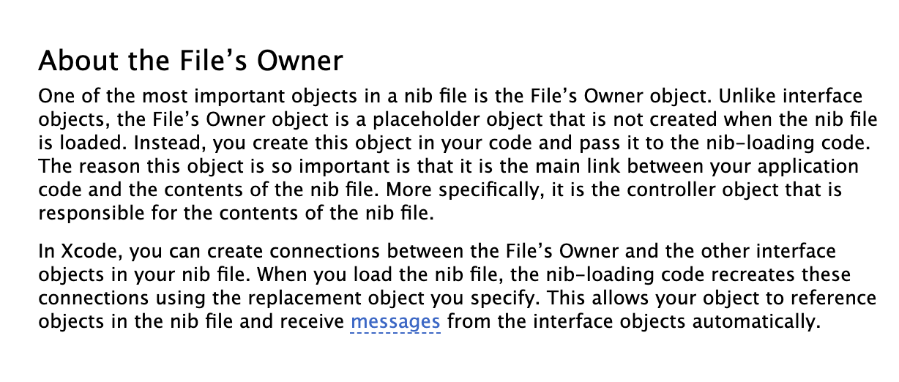

CustomView를 어떻게 만들어야 할까?
CustomView는 같은 UI를 가지는 View들을 하나의 공통된 View로 묶어 재사용하기 위해 만듭니다. 중복을 줄여주는 장점 때문에 저는 되도록 만들어 쓰는 편입니다. CustomView를 만드는 방법은 쉽게 찾아볼 수 있고 2가지로 나뉘더군요. 그 2개의 방법의 차이점을 파악하고 어떤 방법이 더 나은지를 확인하고자 합니다.
CustomView를 만드는 2가지 방법
- IB에서 File’s Owner의 CustomView 클래스를 설정하고 Outlet을 연결한다.
- IB에서 View object의 CustomView 클래스를 설정하고 Outlet을 연결한다.
두 개의 방법은 IB에서의 차이점도 있지만 뷰를 초기화하는 코드에도 차이점이 있습니다. (지금부터는 편의상 두 가지 방법을 1번, 2번으로 쓰겠습니다)
- 1번 초기화 방법
- 2번 초기화 방법
Placeholders와 File’s Owner
제가 찾아봤을 때 CustomView를 만들 때 주로 사용하는 방법은 1번이었습니다. 여기서 한 가지 의문이 생깁니다.
UITableViewCell이나 UICollectionViewCell을 nib과 함께 생성하면 IB에서 File’s Owner가 아니라 Cell Object에 연결되던데 왜 CustomView는 File’s Owner에 연결해서 사용하는가?
일단 nib 파일의 Placeholders와 File’s Owner가 무엇인지부터 알아야겠습니다.
1. File’s Owner
먼저 Nib Files 공식 문서에 있는 File’s Owner의 내용 중 일부를 나름대로 번역해봤습니다.

nib 파일 안의 객체들 중 가장 중요한 것 중 하나가 File’s Owner 객체이다. Interface objects와 다르게, File’s Owner 객체는 placeholder 객체로서 nib 파일이 로드 될 때 생성되지 않는다. 대신, 개발자가 코드 상에서 이 객체를 생성하고 nib-loading code에 전달해야 한다. 이 객체가 application 코드와 nib 파일의 컨텐츠 사이의 main link로서 너무나도 중요하기 때문이다. 구체적으로 말하자면, File’s Owner는 nib 파일의 컨텐츠를 책임지는 Controller object다.
Xcode에서 개발자는 nib 파일에서 File’s Owner와 다른 interface objects 사이의 connection들을 생성할 수 있다. nib 파일을 로드 할 때, nib-loading code는 개발자가 명시한 replacement object를 사용해서 이 connection들을 재생성한다. 이는 객체를 nib 파일 안의 reference objects가 되도록 허용하고, interface objects로 부터 발생한 메시지들을 자동으로 수신하게 해준다.
😁 모든 내용을 이해하기 어렵지만(저는ㅎㅎ), 유의깊게 봐야할 부분은 File’s Owner가 placeholder 객체라는 점인 것 같습니다. 저는 이 placeholder의 의미를 ‘nib을 소유할 실제 클래스의 타입(인스턴스가 아닌)을 가리키기 위한 것’이라고 이해했습니다. 즉, IB에서는 타입만을 지정해주고 실제 인스턴스를 File’s Owner로 지정하는 것이죠.
이제 Placeholders와 File’s Owner가 무엇인지 대충 감은 잡은 것 같습니다. Placeholders 안에 First Responder도 포함되어 있는데 이 내용은 나중에 따로 정리할 예정입니다. 이제 File’s Owner 인스턴스를 어떻게 전달하는지 알아보려합니다.
2. loadNibNamed(_:owner:options:)
CustomView를 만들기 위해 구글링을 하면 대부분의 블로그에 이 코드가 포함되어 있습니다. 메인 Bundle에서 “CustomView” 라는 이름을 가진 nib 파일에 대한 unarchiving, initialize, reestablishing의 과정을 거친 뒤, 해당 nib 파일에 있는 top-level objects를 [Any]의 형태로 리턴해주죠.(top-level objects는 간략하게 IB 좌측 Placeholders 아래에 있는 최상단 object 리스트라고 생각하시면 될 것 같습니다. Nib Files 공식 문서에 이에 대한 설명이 포함되어 있습니다)
loadNibNamed 메서드에 owner 라는 파라미터가 포함되어 있습니다. File’s Owner 인스턴스가 이 owner릍 통해서 전달됩니다. IB에서 File’s Owner와 연결했던 outlet들이 실제 owner인 CustomView의 인스턴스와 연결되겠네요.
CustomView에 대한 구글링을 해보면 coding-compliant Error에 대한 질문이 종종 보이는데, 이 에러가 발생하는 이유는 1번 방법으로 CustomView를 만들 때, owner를 nil로 설정하기 때문에 발생합니다. File’s Owner에 outlet을 만들어놨는데 실제 인스턴스가 File’s Owner로 전달되지 않으면 outlet pointer를 재연결하기 위해 실행되는 setValue:forKey: 메서드에서 에러가 발생하는 것이죠.
UITableViewController, UITableViewCell
그렇다면 왜 Xcode에서 UITableViewCell nib을 자동 생성할 때 1번 방법이 아닌 2번 방법으로 CustomView를 만들까요?
지금은 equeueReusableCell 에서 nil이 리턴되지 않지만 예전에는 이 메서드에서 nil을 뱉어내는 경우가 있었습니다.(재활용할 cell이 memory에 없을 경우겠죠) 그 때를 대비해서 cell을 직접 생성하는 코드를 작성해주어야 했습니다. 그 코드를 보면 UITableViewCell의 nib이 어떻게 로드되는지 알 수 있습니다.
여기서 self는 UITableViewController입니다.File's Owner는 nib 파일의 컨텐츠를 책임지는 Controller object다 라는 내용을 공식 문서에서 확인했습니다. 이걸 테이블 뷰에 적용해보면 nib 파일이 로드 될 때 각 cell의 UI outlet은 top-level objects 중 CustomCell과 연결되고 File’s Owner는 UITableViewController가 되어 테이블 뷰에 포함된 모든 cell의 컨텐츠를 책임지게 되겠네요. 생각해보면 UITableViewController는 생성된 cell에 대한 터치 등등 어플리케이션의 이벤트들을 대신 핸들링해주는 역할을 담당합니다.
즉, UITableViewCell이 2번 방법으로 생성되는 이유는 File’s Owner를 UITableViewController 인스턴스로 설정하기 위함이었다고 볼 수 있습니다.
어떤 방법이 적합할까?
그렇다면 CustomView도 UITableViewCell에서 자동 생성되는 nib처럼 2번 방법을 따라야 할까요? UITableViewController에서 셀을 다룰 때는 dequeueReusableCell나 cellForRowAtIndexPath와 같은 시스템 메서드를 사용하지만, 일반 CustomView는 그렇지 않습니다. 초기화 코드를 직접 작성해야하죠.
그럼 1번 방법을 따르는 게 옳을까요? 생각해보면 xib 자체가 여러 개의 top-level object를 포함할 수 있게 만들어져 있기 때문에 File’s Owner가 1개의 UIView 클래스로 지정되는 것도 IB 설계의 방향성에 부합되지 않아 보입니다. 또한 Controller object의 역할을 하는 File’s Owner에 UIView가 알맞은 후보라고 할 수도 없는 것 같습니다.
결론 및 정리
많은 시간을 들였지만 어떤 방법이 조금 더 코코아터치 프레임워크에 적합한지 명확하게 찾아낼 수는 없었습니다.
다만, File’s Owner의 정의를 깊이 고민해본다면 1번 방법보다는 2번 방법이 더 옳은 방법이 아닐까 싶습니다.
1개의 xib에서 1개의 View만을 표현하도록 강제하고 싶다면 1번 방법이 목적에 더 부합한다고 볼 수도 있겠지만 말이죠.
피드백은 언제나 환영입니다. 🚀